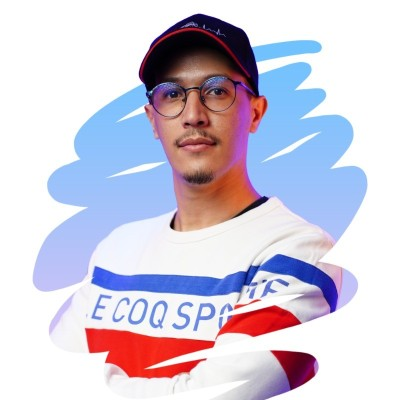
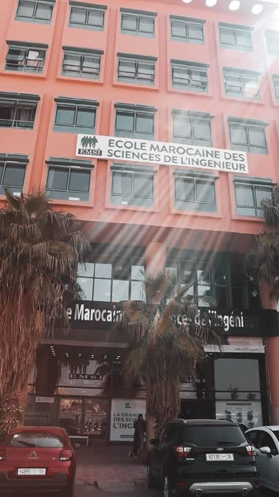
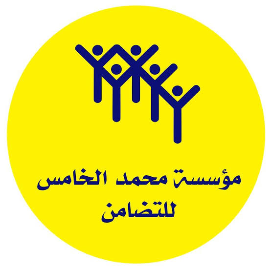
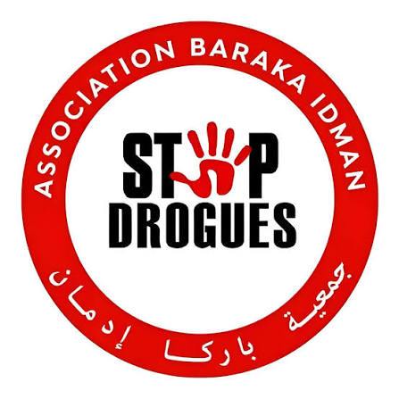
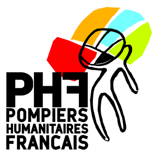
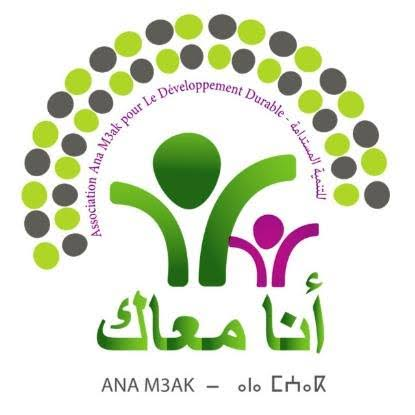

flach24 podcast
Documenting the first episodes of the flach24 podcast, with presenter Mohamed El Mrikhi and guest El Ghali El Ghailani.
MOROCCO · PHOTOGRAPHY & FILM
People first.
Stories that stay.
Photojournalism, photography and films that bring human stories into focus.

A visual storyteller, based in Morocco.PEOPLE, PROJECTS & PURPOSE
Selected experience across education, media and business — through in-house work, freelance projects and content production.
Names and marks identify past work; they do not imply endorsement.
01 / SELECTED WORK
A selection of media, event and educational projects.
Documenting the first episodes of the flach24 podcast, with presenter Mohamed El Mrikhi and guest El Ghali El Ghailani.

View the project ↗Coverage of Nuxera Group at the EMSI Marrakech Internship Fair on April 26, 2025, capturing the team's presence and conversations with students.
EDUCATIONAL CONTENT
Case study / Content production
For Schoolaris, I filmed and edited educational lessons, promotional videos and social media reels, supporting a more engaging online learning experience.
Project associated with CCL — Centre des Compétences et Leadership.
02 / SERVICES
From a documentary moment to a brand story, I bring photography, filming and editing together around your project.
Documentary stories, event coverage, portraits and sports. An authentic look at people and the places they shape.
Educational courses, institutional films and promotional content. Filming with a clear story in mind.
Video editing, post-production and short-form reels, using Adobe Premiere Pro and Media Encoder.
Photography for businesses, restaurants and real estate. Images designed around your communication needs.
COMMUNITY & VOLUNTEERING
Documenting the people and initiatives making a difference, through association work and volunteering.

Fondation Mohammed V pour la Solidarité
Association Baraka Idman
Pompiers Humanitaires Français
Association Ana M3akMedia & communication · Employment and volunteering
2023–2025Documenting association activities · Volunteering
2017–202003 / BEHIND THE LENS
I'm Aboubakr, a visual storyteller based in Morocco with over five years of field experience.
My work explores human, social and educational realities. From documenting humanitarian missions to producing educational films, I focus on authenticity, emotion and the meaning behind each image.
My experience brings together associations, media outlets and educational platforms, creating visual content for digital channels.
THE PATH SO FAR
Videographer & video editor · CCL
Freelance work · flach24.com and Nuxera Group
Media & communication · Association Baraka Idman
Photojournalism · Expresstv.ma and 3LACH TV
HAVE A STORY IN MIND?
Tell me about your idea, your audience and the story you want to share. We can start the conversation on LinkedIn.
Start a conversationPhotography · Videography · Video editing